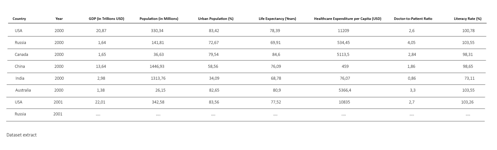
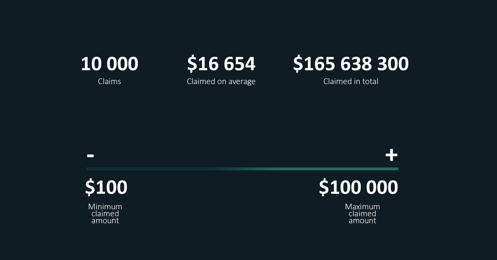
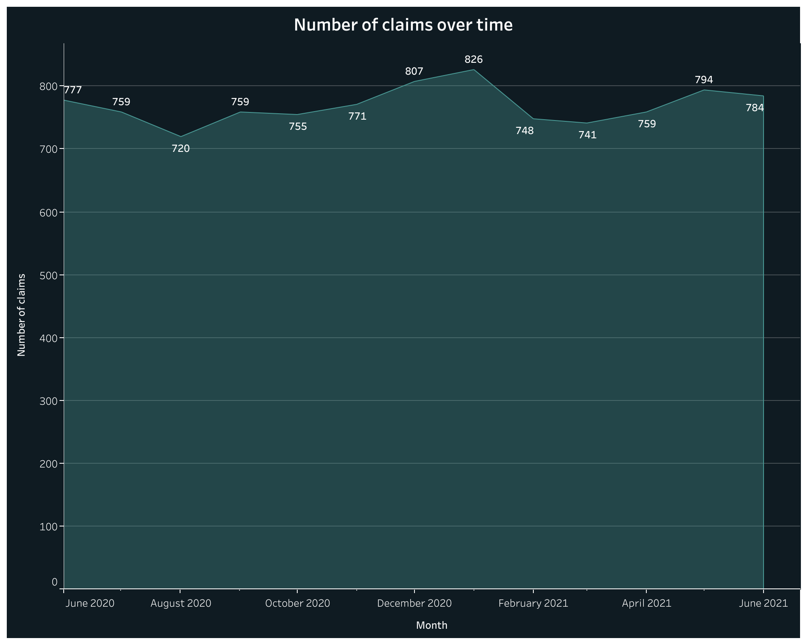
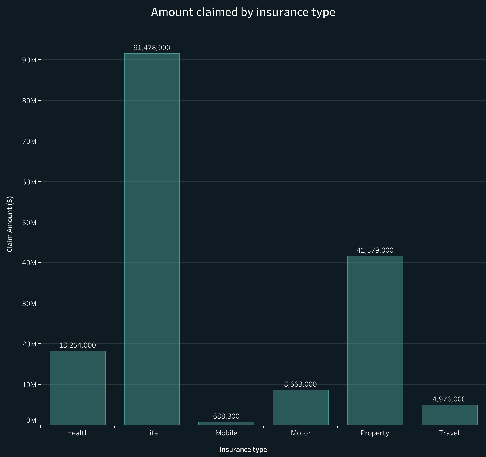
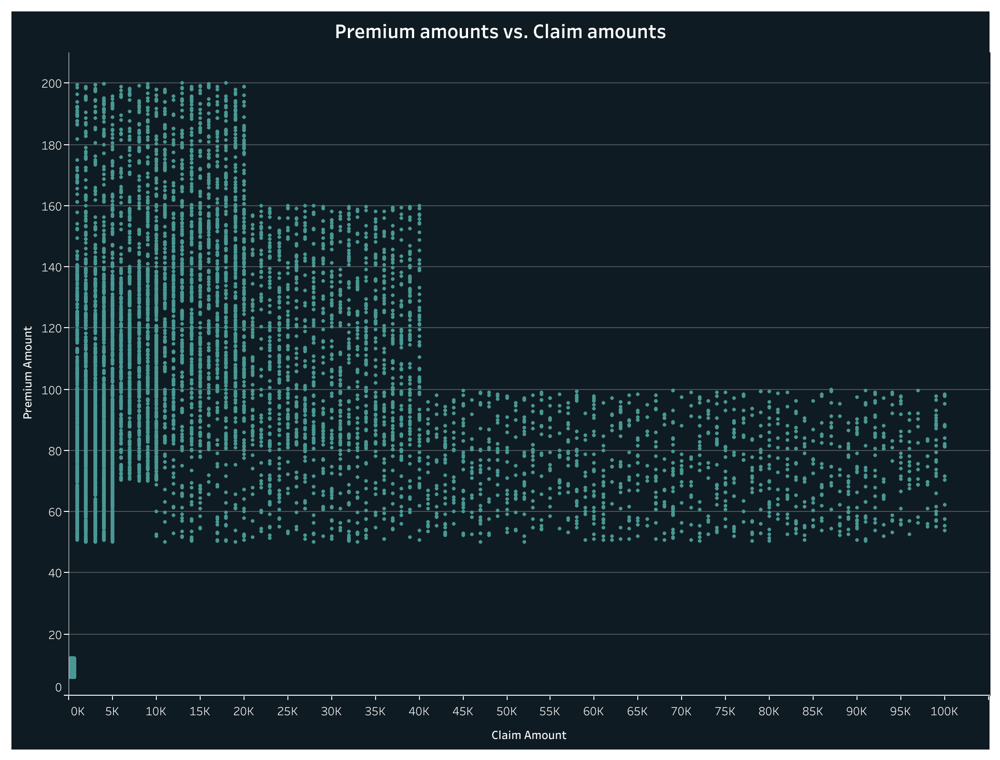

Analyzing Insurance Claims Patterns
Context
Insurance companies handle a significant amount of transaction data from claims. Understanding patterns in these claims can help companies manage risks, optimize pricing, and detect fraudulent claims. How can insurance companies identify key patterns in claims data to better predict high-cost claims and improve risk management? The primary goal of this analysis is to identify patterns in claims, and provide actionable insights that insurance companies can use to optimize their operations.
We will be working on the “Claims Data” table from the following Insurance Claims Fraud Dataset from Kaggle.
This dataset includes insurance transaction data, including transaction dates, customer and policy details, insurance types, premium amounts, and claims amounts.
Now that we have a clean dataset, we want to get a sense of the data and identify trends that could be relevant to our analysis. First of all, we want to identify the basic statistical properties of our claims and premium amounts in order to understand the central tendencies and variability within the dataset. Let's calculate the descriptive statistics (mean, median, frequency…) for claims and premium amounts:
Between June 2020 and June 2021, there were 10,000 claims, with claim amounts ranging from $100 to $100,000. The average claim amount was $16,564, and the total sum of all claims exceeded $165 million.
Distribution of Claim Amounts
Next, we want to analyze the distribution of claim amounts to reveal information about typical claim sizes and identify any unusual values.

This histogram illustrates the distribution of claims, showing how many claims fall into various ranges. We can see that most claims fall within the range “under $5000”, while there are notable outliers in the higher range. These outliers represent claims that exceed the typical range, indicating high-cost claims that may require further investigation.
Identify Patterns in Claims
To further inform our analysis, we want to identify key patterns that could help in risk management strategies. Let’s examine trends in claims over time to understand seasonality and identify periods of high claim activity. We will group claims by month and year to see how they fluctuate.
We observe a spike in claims at the end of the year, likely due to factors associated with celebrations, such as increased travel and holiday gatherings that may lead to accidents or incidents.
Claims by Insurance Type
We also want to understand which types of insurance have the highest claims to help in risk assessment. Let's aggregate claim amounts by insurance type.
According to this bar chart, we can see that the life insurance type has the highest average claim amount of $91 million, indicating a higher risk of claims associated with this type of insurance.
Correlation Analysis
Finally, we want to visualize the relationships between premium amounts and claim amounts. This will help us determine if there’s a relationship between the amount paid in premiums and the amount claimed.
When visualizing the relationship through a scatter plot, we observe a "staircase" pattern:
- Low-premium customers exhibit a broad range of claim amounts, from very small to relatively high claims.
- Intermediate-premium customers show a moderate range of claims.
- High-premium customers tend to have more consistent and smaller claims, potentially indicating a difference in behavior or risk profile.
To confirm these interpretations, we can calculate the correlation coefficient which indicates how strongly two variables are related. The correlation coefficient for premium amounts and claim amounts is 0.10 which confirms a very weak relationship between the two variables. This pattern could suggest that higher-premium customers may be more cautious or have fewer claimable incidents, whereas lower-premium customers have more variable circumstances, leading to a wider range of claims.
Conclusion and Recommendations
This analysis highlights key patterns in insurance claims that can enhance risk management and pricing strategies for insurers. Our findings revealed several insights:
- Claim amounts vary significantly, with a notable concentration of claims at lower amounts and a few high-cost outliers that merit attention.
- Seasonal trends indicate increased claims during year-end celebrations, which may relate to heightened risks during this period.
- The life insurance sector emerges as particularly risky due to its high average claim amounts.
- The weak relationship between premium amounts and claimed amounts suggests that other underlying variables may better explain claim behavior.
To optimize operations, insurers should consider implementing targeted strategies for high-cost claims, especially around peak periods, and adjust premium pricing to align with observed risk patterns. Further exploration into customer behavior and claim context could provide additional insights for effective risk management.